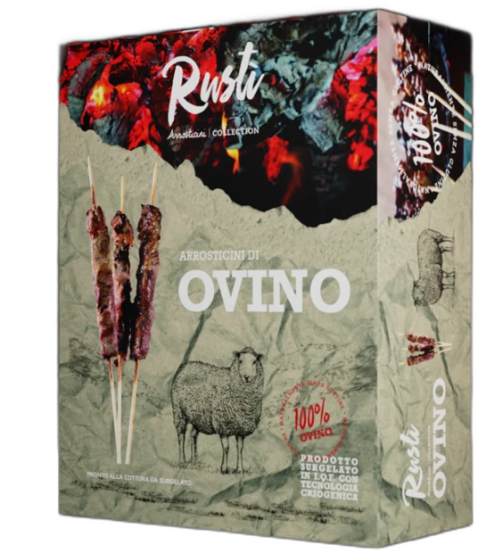
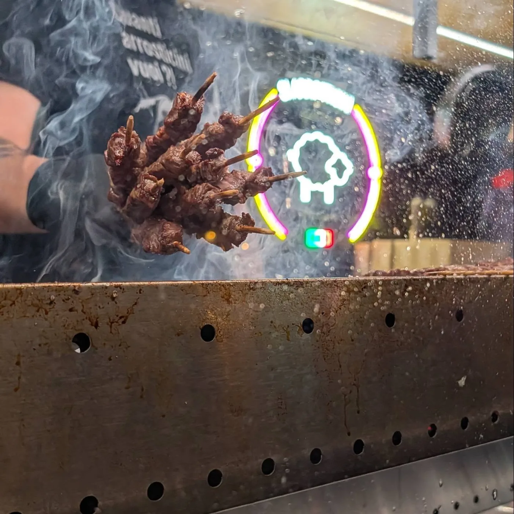
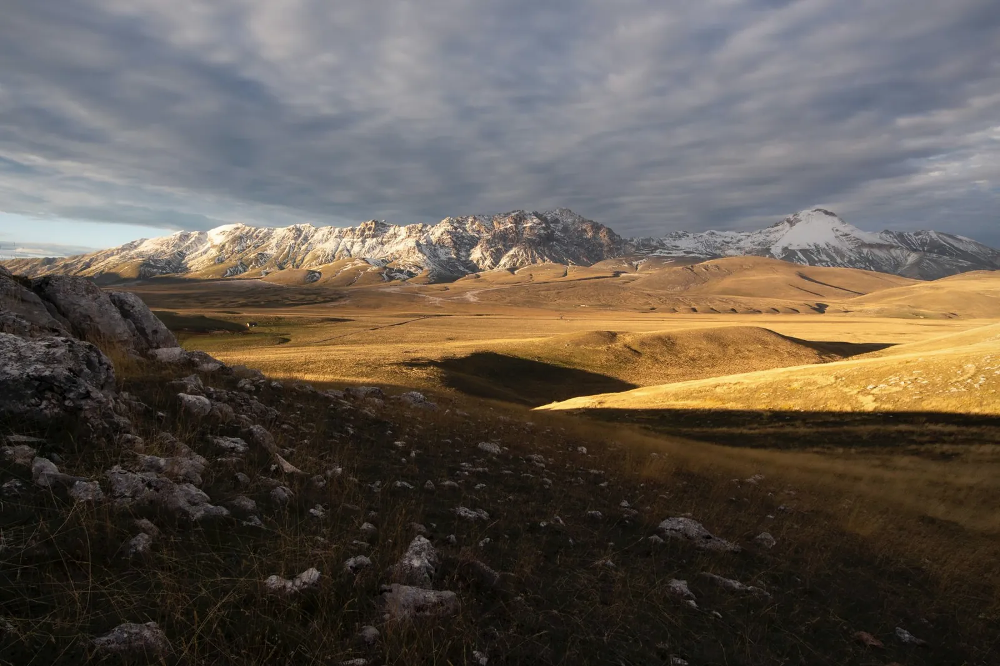
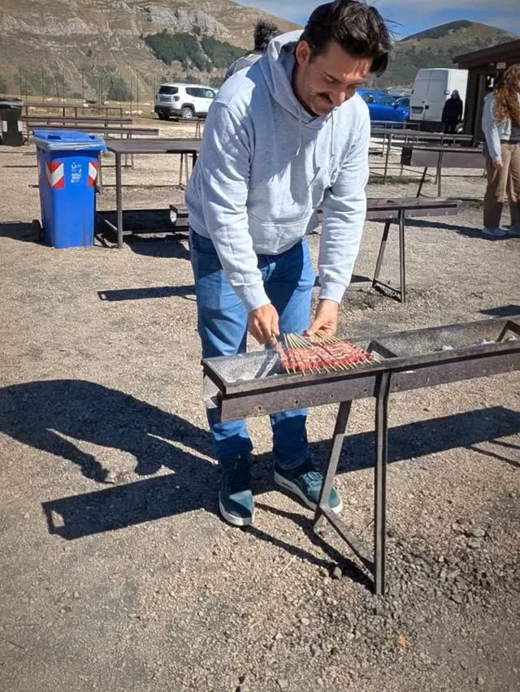
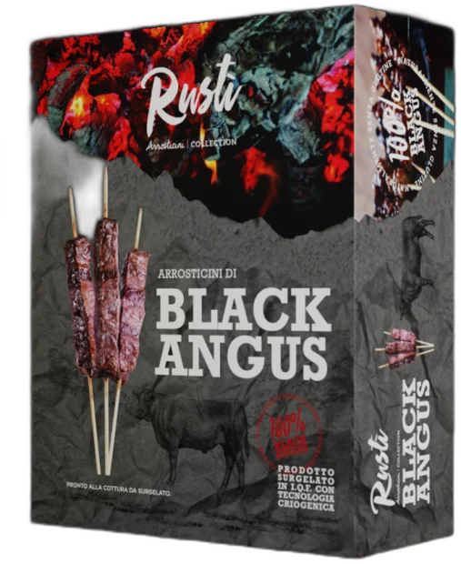
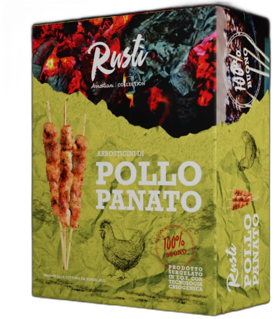
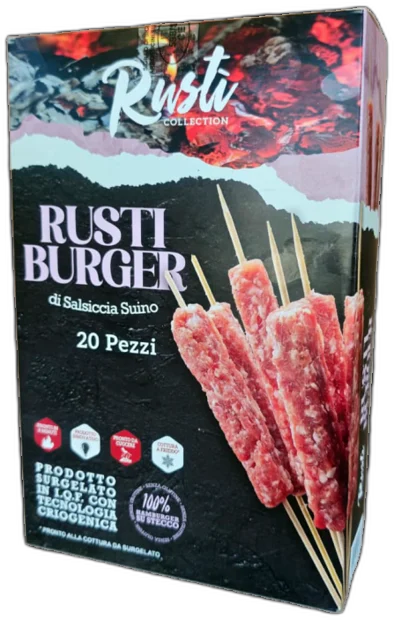
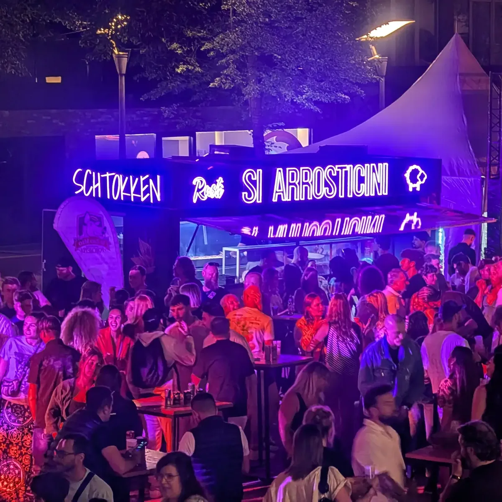
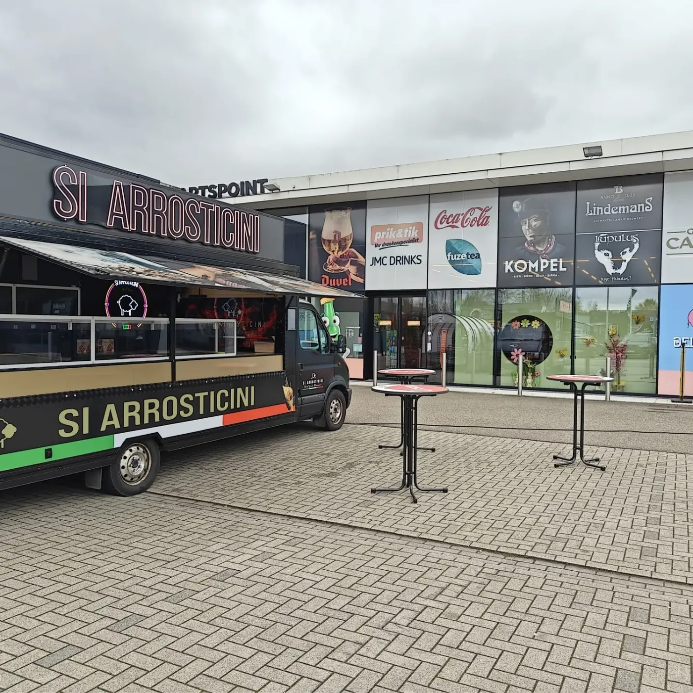
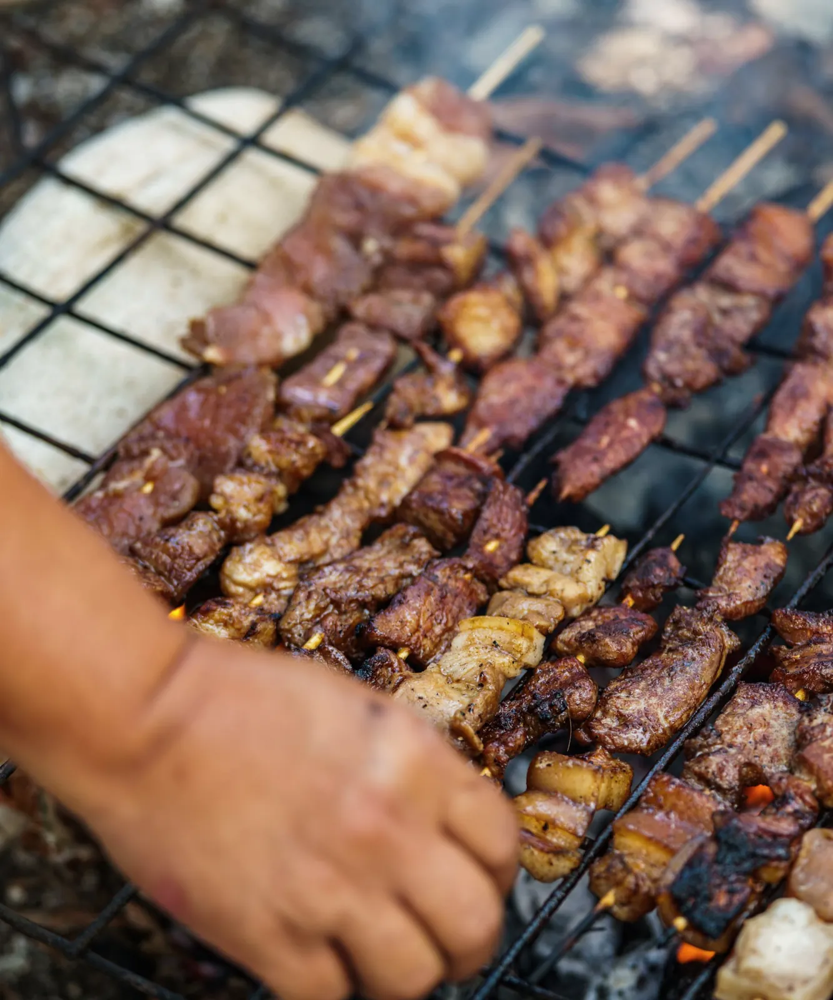

Bestseller

Ovino
Schapenvlees, 22 of 30 gram per stokje. Dozen van 10 tot 200 stuks.
€ 10,5010 stokjes van 30 g
Kleine stokjes mals schapenvlees, gegrild boven houtskool zoals ze dat in de Abruzzen al generaties doen. Proef ze bij onze foodtruck, of grill ze thuis op je eigen barbecue.



Gran Sasso, AbruzzoIn de Abruzzen hoort bij elk feest een barbecue vol arrosticini. Simpel en eerlijk: goed vlees aan een dun stokje, boven gloeiende houtskool. Die smaak brengen we naar België. Onlangs trokken we nog zelf terug naar de bron, met een barbecue op de Gran Sasso.
Al onze stokjes zijn er in doosjes om te proeven tot grote dozen voor een feest. Afhalen in de winkel of laten leveren via de webshop.

Schapenvlees, 22 of 30 gram per stokje. Dozen van 10 tot 200 stuks.

Black Angus-rund aan een stokje, sappig en vol van smaak.

Gepaneerde kip aan een stokje, krokant van de grill.

Rusti burger van Italiaanse varkensworst, aan een stokje.
Quanti arrosticini vuoi?!
Hoeveel arrosticini wil je? Ons lievelingsvraagje staat nu ook op een T-shirt.
Naar de webshopVan de metalheads op Graspop tot de supporters van KRC Genk: overal waar onze foodtruck staat, hangt de geur van arrosticini. Een verjaardag, een bedrijfsfeest of een festival? Wij steken de houtskool aan, jij geniet mee.

Schtokken tot laat

In Houthalen vind je ons hele gamma: stokjes, barbecues, houtskool en alles wat erbij hoort. Vooraf bestellen hoeft niet, de voorraad kan je online checken.
Geen tijd om naar Houthalen te rijden? Onze stokjes liggen ook in de diepvries bij deze winkels.
★★★★★"De arrosticini van Si Arrosticini zijn echt van topniveau. Heerlijk sappig en met die authentieke smaak die je meteen naar Italië (Abruzzo) brengt."
★★★★★"Maar wat heb ik genoten op Graspop van deze snacks. Ik mis ze nu al... Hopelijk volgend jaar weer als mijn middag snack, namiddag snack, avond snack en als het kan nacht snack."
★★★★★"Beste festival voer van alle foodtrucks. Echt heel lekker en past goed bij een drankje met muziek erbij!"
★★★★★"Super lekkere vleessticks! Je proeft echt dat het een goede kwaliteit van vlees is!"
Ik maakte deze demo voor jullie om te tonen wat er kan. Na een kort gesprek maak ik er iets veel persoonlijkers van, helemaal naar jullie wens.
Vrijblijvend. Ik kom langs of we bellen.
Op maat, op jullie eigen domein.
Geen voorschot. Jullie betalen pas als alles klaar is.
Hosting, domeinnaam en kleine wijzigingen, zoals nieuwe openingsuren.
Omdat een voorbeeld meer zegt dan een mail. Zo zien jullie meteen wat er kan, en het kost jullie niets.
Nee. Het gesprek is vrijblijvend. Vinden jullie het niks, dan is het daarmee gedaan.
Na ons gesprek staat jullie site binnen 10 tot 14 dagen online.
Zeker. Jullie domeinnaam kan gewoon blijven, de nieuwe site komt in de plaats van de oude.
Nee, dat doe ik op basis van ons gesprek. Eigen foto's zijn mooi meegenomen, maar niet nodig om te starten.